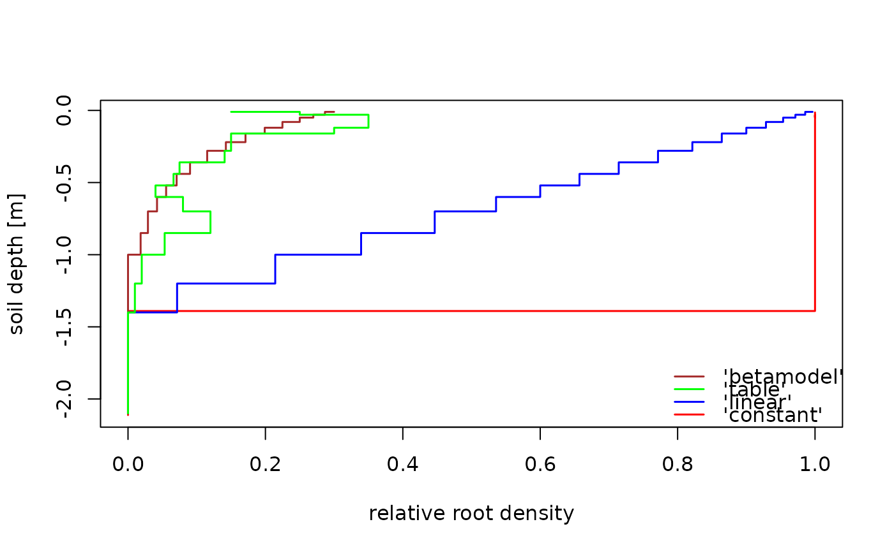

Generates a root density depth function for soil layers
Usage
make_rootden(
soilnodes,
maxrootdepth = min(soilnodes),
method = "betamodel",
beta = 0.97,
rootdat = NULL
)Arguments
- soilnodes
Vector of soil layer depth limits (including the top and the bottom of the profile) for which the relative root distribution will be calculated (m, negative downwards).
- maxrootdepth
The maximum rooting depth (m, negative downwards) below which relative root length density will be set to zero (not applying when
method = 'table').- method
Method name for the root depth distribution. Possible values are 'betamodel', 'table', 'linear', 'constant'. See details.
- beta
Parameter of the root distribution function.
- rootdat
data.frame with a given root depth density distribution. Columns are depth limits ('upper' and 'lower' in m, negative downwards) and relative root densities of fine or absorbing roots ('rootden') per unit stonefree volume. Only used when
method = 'table'.
Value
Vector of relative root length densities for the soil layers framed
by soilnodes. Length is one less than length(soilnodes).
Details
method = 'betamodel' calculates the relative root length
densities of the soil layers from the cumulative proportion of roots
derived by the model after Gale & Grigal (1987). method = 'table'
distributes the relative root densities provided by rootdat to the
soil layers, under preservation of total root mass. method =
'linear' returns linearly decreasing root densities with a value of 1 at
the top of the soil profile to 0 at maxrootdepth. method =
'constant' returns a uniform root distribution with a relative root length
density of 1 for all soil layers above 'maxrootdepth'.
References
Gale, M.R. & Grigal D.F. (1987): "Vertical root distributions of northern tree species in relation to successional status." Canadian Journal of Forest Research, 17:829-834
Examples
depths <- c(max(slb1_soil$upper), slb1_soil$lower)
roots_beta <- make_rootden(soilnodes = depths,
maxrootdepth = -1,4,
beta = 0.97,
method = "betamodel")
rootden_table <- data.frame(
upper = c(0.03,0,-0.02, -0.15, -0.35, -0.5, -0.65,-0.9,-1.1,-1.3),
lower = c(0,-0.02, -0.15, -0.35, -0.5, -0.65,-0.9,-1.1,-1.3,-1.6),
rootden = c(10,15, 35, 15, 7.5, 4, 12, 2, 2, 0))
roots_table <- make_rootden(soilnodes = depths,
method = "table",
rootdat = rootden_table)
roots_linear <- make_rootden(soilnodes = depths,
maxrootdepth = -1.4,
method = 'linear')
roots_constant <- make_rootden(soilnodes = depths,
maxrootdepth = -1.4,
method = 'const')
plot(roots_constant, slb1_soil$lower +runif(n=length(slb1_soil$lower), -0.02,0.02),
type = 's', lwd = 1.5,ylab = "soil depth [m]",xlab = "relative root density",
xlim = c(0,1), col = "red")
lines(roots_linear, slb1_soil$lower,
type = 's', col = "blue", lwd = 1.5)
lines(roots_beta*10, slb1_soil$lower, type = 's', col = "brown", lwd = 1.5)
lines(roots_table/100, slb1_soil$lower,
type = 's', col = "green", lwd = 1.5)
legend("bottomright", c("'betamodel'","'table'","'linear'", "'constant'"),seg.len = 1.5,
pch = NULL, lwd =1.5, col = c("brown", "green", "blue", "red"), bty = "n")
